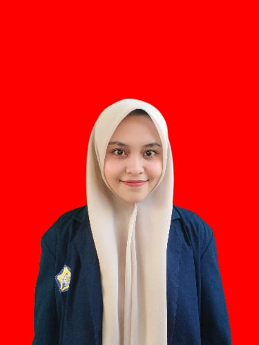

Data Diri

Nama: Desti Vetri Nursiani
NPM: A1D024005
Program Studi: Pendidikan Biologi
Materi Biologi
pertumbuhan dan perkembangan
- Pertumbuhan adalah proses pertambahan jumlah dan atau ukuran sel dan tidak dapat kembali kebentuk semula (irreversible), dapat diukur (dinyatakan dengan angka, grafik dsb).
- Perkembangan adalah proses menuju ke tingkat kedewasaan/pematangan tidak dapat diukur tetapi hanya dapat di amati.
File
Unduh file berikut untuk materi lebih lanjut: